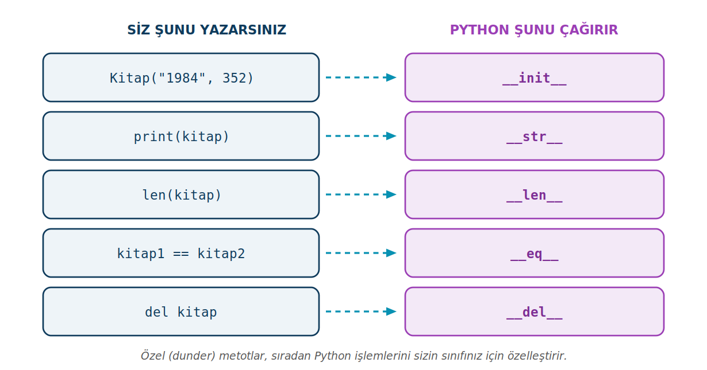

Metotlar ve Özel (Dunder) Metotlar
Geçen hafta nesnelere veri vermeyi öğrendik. Bu sayfa nesnelere davranış kazandırmayı anlatır: sınıf içinde metot tanımlamayı, self ile nesnenin verisine ulaşmayı ve Python'un print, len, == gibi işlemlerde kendisi çağırdığı özel metotları.
Bu sayfada
1Metot nedir?
Geçen modülde bir nesneye veri verdik: araba1'in modeli, rengi, beygir gücü vardı. Ama bir araba sadece veriden ibaret değildir; bir şeyler yapar da — hızlanır, korna çalar, durur. İşte bir nesnenin yapabildiği bu işlere metot denir.
Metot, aslında bir sınıfın içinde tanımlanmış bir fonksiyondur. Sıradan bir fonksiyondan tek farkı, bir nesneye ait olması ve o nesnenin verisine erişebilmesidir. Bir öğrencinin notlarını ekleyen, ortalamasını hesaplayan, bilgilerini ekrana yazan işlemler hep metot olarak yazılır. Böylece bir nesnenin verisi (özellikler) ile davranışları (metotlar) tek bir çatı altında toplanır — nesne tabanlı programlamanın asıl gücü buradadır.
2İlk metot ve self
Bir metodu, sınıfın içinde def ile tanımlarız ve ilk parametresi her zaman self olur. self sayesinde metot, "üzerinde çalıştığı nesnenin" verisine ulaşır.
class Ogrenci:
def __init__(self, ad, soyad, numara):
self.ad = ad
self.soyad = soyad
self.numara = numara
def bilgileri_goster(self):
print(f"Ad: {self.ad}\nSoyad: {self.soyad}\nNumara: {self.numara}")
og1 = Ogrenci("Ali", "Veli", 123)
og1.bilgileri_goster()
Ad: Ali Soyad: Veli Numara: 123
bilgileri_goster metodunu çağırırken og1.bilgileri_goster() yazdığımıza dikkat edin; parantezin içine self yazmayız. Çünkü og1. kısmı zaten Python'a "self bu nesnedir" der. Metodun içindeyse self.ad, self.soyad diyerek o nesnenin verisine ulaşırız.
3Parametre alan ve değer döndüren metotlar
Metotlar, tıpkı fonksiyonlar gibi dışarıdan parametre alabilir ve return ile değer döndürebilir. Aşağıdaki ortalama metodu hiç parametre almaz ama nesnenin notlarını kullanarak bir sonuç döndürür:
class Ogrenci:
def __init__(self, ad, vize, final):
self.ad = ad
self.vize = vize
self.final = final
def ortalama(self):
return self.vize * 0.4 + self.final * 0.6
og = Ogrenci("Ayşe", 70, 80)
print(og.ortalama()) # 76.0
Burada ortalama metodu, nesnenin vize ve final özelliklerini okuyup ağırlıklı ortalamayı hesaplar ve geri döndürür. Sonucu istediğimiz yerde kullanabiliriz.
4Nesnenin durumunu değiştiren metotlar
Bir metot yalnızca bilgi okumakla kalmaz; nesnenin verisini değiştirebilir de. Bunu yine self. üzerinden yaparız. Aşağıdaki not_ekle metodu, aldığı notları nesnenin yeni bir özelliğine yazar:
class Ogrenci:
def __init__(self, ad, soyad, numara):
self.ad = ad
self.soyad = soyad
self.numara = numara
def not_ekle(self, vize, final):
self.notlar = [vize, final] # nesneye yeni bir özellik eklenir
def notlari_goster(self):
print(f"Notlar: {self.notlar}")
def gecme_durumu(self):
ortalama = self.notlar[0] * 0.4 + self.notlar[1] * 0.6
if ortalama >= 60:
print(f"Ortalama: {ortalama} - Geçti")
else:
print(f"Ortalama: {ortalama} - Kaldı")
og = Ogrenci("Ali", "Veli", 123)
og.not_ekle(70, 80)
og.notlari_goster() # Notlar: [70, 80]
og.gecme_durumu() # Ortalama: 76.0 - Geçti
Burada üç metot bir nesnenin durumu üzerinde sırayla çalışıyor: not_ekle veriyi yazıyor, notlari_goster okuyup gösteriyor, gecme_durumu ise o veriyi işleyip bir karar veriyor. Bir öğrenciyle ilgili tüm davranışlar tek bir sınıfın içinde toplanmış oldu.
gecme_durumu metodu çalışmadan önce not_ekle çağrılmış olmalıdır; aksi hâlde self.notlar henüz var olmadığından hata alırsınız. Metotların hangi sırayla çağrılacağı, sınıf tasarımının bir parçasıdır.
5Özel (dunder) metotlar
Python'da bazı metotların adı iki alt çizgiyle başlayıp biter: __init__, __str__, __len__. Bunlara özel metotlar ya da kısaca dunder (double underscore) metotlar denir. Bu metotların ortak özelliği, doğrudan sizin çağırmamanızdır; Python onları belirli durumlarda kendisi çağırır. Örneğin bir nesneyi print()'e verdiğinizde Python arka planda o nesnenin __str__ metodunu çalıştırır.

Bu metotları kendi sınıfımızda tanımlayarak, nesnelerimizin bu sıradan işlemlere nasıl tepki vereceğini biz belirleriz. Şimdi bir Kitap sınıfı üzerinden en sık kullanılanları görelim.
5.1 __str__ — print() çıktısını belirler
Bir nesneyi olduğu gibi print()'e verirseniz, Python varsayılan olarak <__main__.Kitap object at 0x...> gibi okunması zor bir çıktı verir. __str__ metodu, bunun yerine kendi belirlediğimiz okunaklı bir metin döndürmemizi sağlar:
class Kitap:
def __init__(self, isim, yazar, sayfa):
self.isim = isim
self.yazar = yazar
self.sayfa = sayfa
def __str__(self):
return f"Kitap: {self.isim} / {self.yazar} ({self.sayfa} sayfa)"
kitap = Kitap("Sefiller", "Victor Hugo", 1488)
print(kitap) # Kitap: Sefiller / Victor Hugo (1488 sayfa)
5.2 __len__ — len() davranışını belirler
__len__ metodu, nesneniz len() fonksiyonuna verildiğinde dönecek değeri belirler. Bir kitabın "uzunluğu" olarak sayfa sayısını döndürmek mantıklıdır:
class Kitap:
def __init__(self, isim, sayfa):
self.isim = isim
self.sayfa = sayfa
def __len__(self):
return self.sayfa
kitap = Kitap("1984", 352)
print(len(kitap)) # 352
5.3 __eq__ — == ile eşitlik karşılaştırması
İki nesnenin ne zaman "eşit" sayılacağına siz karar verebilirsiniz. __eq__ metodu, == operatörünün davranışını belirler. Örneğin iki kitabı ISBN numaraları aynıysa eşit kabul edebiliriz:
class Kitap:
def __init__(self, isim, isbn):
self.isim = isim
self.isbn = isbn
def __eq__(self, other):
return self.isbn == other.isbn
k1 = Kitap("Savaş ve Barış", "9786053605111")
k2 = Kitap("Anna Karenina", "9786053605111")
print(k1 == k2) # True (isimleri farklı ama ISBN'leri aynı)
Buradaki other, karşılaştırılan diğer nesnedir. k1 == k2 yazdığınızda Python k1.__eq__(k2) çağırır; self k1'i, other k2'yi temsil eder.
Dunder metotları siz çağırmazsınız; Python print, len, == gibi işlemlerde kendisi tetikler. Siz yalnızca onları tanımlarsınız. Nesnelerinizi print ile incelemek için neredeyse her sınıfa okunaklı bir __str__ eklemek iyi bir alışkanlıktır.
6Konu sonu testi
Aşağıdaki beş soruyu kendiniz çözün. Her sorunun altındaki Cevabı göster satırına tıklayınca doğru cevap ve açıklaması açılır.
-
Bir metodun ilk parametresi geleneksel olarak ne olmalıdır?
- A)
this - B)
init - C)
self - D)
class - E)
object
Cevabı göster
CMetodun ilk parametresi geleneksel olarakself'tir; üzerinde çalışılan nesneyi temsil eder. - A)
-
og.bilgileri_goster()çağrısındaself'e ne karşılık gelir?- A)
bilgileri_gostermetodu - B)
Ogrencisınıfı - C) Boş bir değer
- D) Metodun parametreleri
- E)
ognesnesi
Cevabı göster
Eog.metot()çağrısındaognesnesiself'e karşılık gelir. - A)
-
Hangi özel metot, bir nesne
print()'e verildiğinde çağrılır?- A)
__str__ - B)
__init__ - C)
__len__ - D)
__eq__ - E)
__add__
Cevabı göster
Aprint(), nesnenin__str__metodunu çağırır. - A)
-
Aşağıdaki kodun çıktısı nedir?
soru4.pyclass Kutu: def __init__(self, adet): self.adet = adet def __len__(self): return self.adet k = Kutu(7) print(len(k))- A)
Kutu - B)
7 - C)
<Kutu object> - D)
1 - E) Hata verir
Cevabı göster
B__len__adet değerini döndürür;len(k)→7. - A)
-
Aşağıdaki kodda neden hata oluşur?
soru5.pyclass Sayac: def __init__(self): self.deger = 0 def arttir(): self.deger += 1 s = Sayac() s.arttir()- A)
__init__yanlış yazılmış - B)
self.degertanımsız - C) Nesne oluşturulamaz
- D)
arttirmetodundaselfparametresi eksik - E) Hata oluşmaz
Cevabı göster
Darttirmetoduselfparametresi almadığından,s.arttir()çağrısıTypeErrorverir. Doğrusudef arttir(self):'tir. - A)
Özellik veriyi, metot davranışı belirler. Metot içinde nesneye her zaman self. ile ulaşın; çağırırken self yazmayın, Python'un kendisi geçer. __str__'de çıktıyı return ile döndürün, ekrana yazmayın.
Sınıflar dizisinin ikinci modülü. Önceki: Sınıflara Giriş (6. hafta, __init__ ve self). Sonraki: Kalıtım (10. hafta).